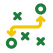

GEAGRO CEREALES
Para productores y equipos técnicos que necesitan planificar, ejecutar y controlar cada campaña agrícola. Resuelve la gestión de campos, lotes y campañas, con insumos y labores en un solo sistema, desde la planificación hasta el análisis final, con trazabilidad del grano en silos propios y en acopiadores.
- Campos y lotes

Plan técnico- Variables climáticas
- Labores
- Insumos
- Compras e inventario
- Acopio
- Transporte
- Indicadores y alertas
- Rendimientos y costos